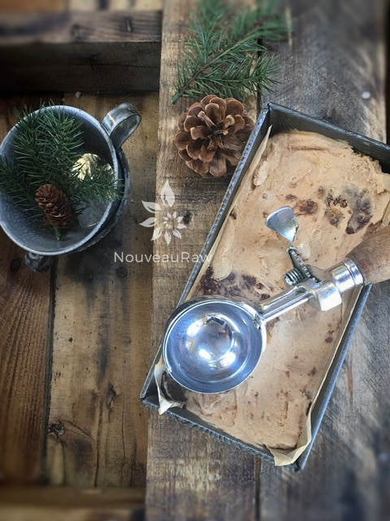
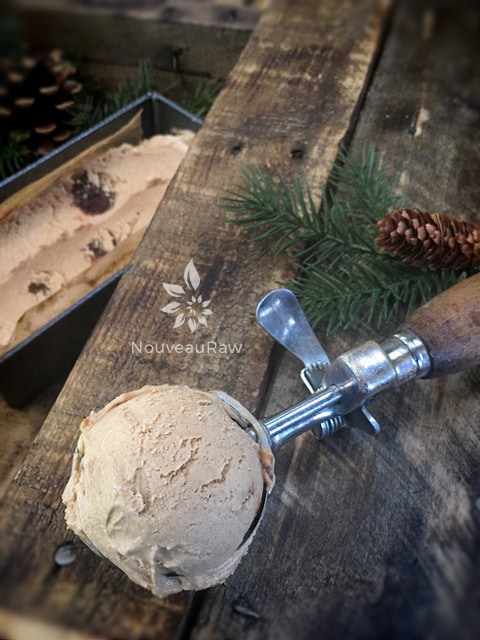
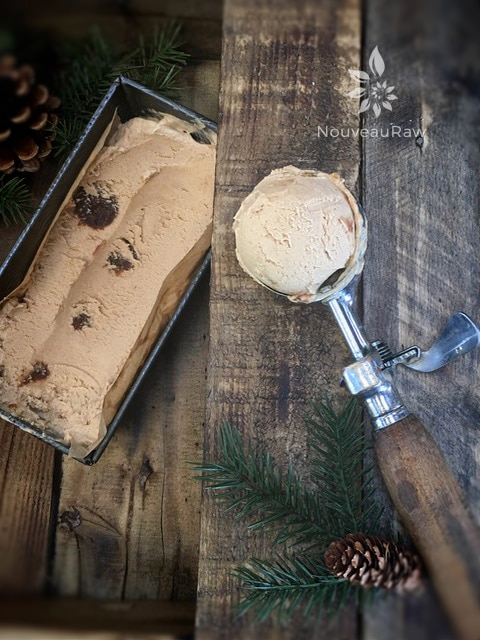

Ginger Peach Ice Cream with Honey Ginger Chocolate Fudge Nuggets

~ raw, vegan, gluten-free, grain-free ~
Ginger Peach Ice Cream with Honey Ginger Chocolate Fudge Nuggets… well if that isn’t a mouthful (no pun intended). When all was said and done, I still couldn’t decide what to call it. I wanted the name to reach out and grab you, to lure you in, to get your mouth to water, to make you want to dive headfirst into the computer screen and devour the whole thing… Did it work?
I find taking pictures of ice cream more challenging than other foods. I run all over the house, inside and out, trying to find just the right light, before it melts. Tonight the perfect place for the picture was outside in the courtyard. As I was taking a few snapshots, our neighbor came over to say hi.
We just love Tom and his wife, Leslie. After chatting a bit, he said that he needed to get home for dinner… before I knew it my husband handed Tom my photoshoot… so they could share it for dessert. Lol, I was more than thrilled to share with them… but this was and is the best shot I got of Ginger Peach Ice Cream with Honey Ginger Chocolate Fudge Nuggets as it headed out of sight. :) Oh, should mention that I drizzled some raw, local honey on top in case you were wondering. I believe in layers of goodness!
Before we get started here, I wanted to say that I used frozen organic peaches because the ones in the local grocery store were hard as rocks. Bottom line, they weren’t ripe, and not only does that greatly affect the flavor, but there are also fewer nutrients, and is harder to digest. So, I opted for frozen peaches which are preserved at peak ripeness.
yields 5 1/2 cups batter
- 2 cups raw cashews, soaked 2+ hours
- 4 cup frozen peaches, thawed
- 1/4 cup raw honey
- 2 tsp vanilla extract
- 2 Tbsp raw cold-pressed coconut oil
- 1 Tbsp ground Ceylon cinnamon
- 1/2 tsp ground ginger
- 1/4 tsp Himalayan pink salt
- 1 cup Honey Ginger and Peach Chocolate Fudge (rolled into tiny balls)
Preparation:
- Place the cashews in a glass bowl, along with 4 cups of water.
- Soak for at least 2 hours. Read more about why (here).
- The soaking process will help reduce phytic acid, which will aid in digestion.
- The soaking also softens the cashews so they blend nice and creamy.
- After the cashews are through soaking, drain, and rinse.
- In a high-powered blender combine the: cashews, peaches, honey, vanilla, coconut oil, cinnamon, ginger, and salt. Process till nice and creamy.
- Due to the volume and the creamy texture that we are going after, it is important to use a high-powered blender. It could be too taxing on a lower-end model.
- Blend until the filling is creamy smooth. You shouldn’t detect any grit. If you do, keep blending.
- This process can take 2-4 minutes, depending on the strength of the blender. Keep your hand cupped around the base of the blender carafe to feel for warmth. If the batter is getting too warm. Stop the machine and let it cool. Then proceed once cooled.
- After the mixture is blended, hand mix in the Honey Ginger and Peach Chocolate Fudge balls.
- Place the blender carafe in the fridge or freezer to chill for about 1 hour.
- Once chilled, pour into your ice cream maker and follow the manufacturer’s instructions.
- It is best to take the ice cream out of the freezer for about 10 minutes ahead of time so it can have a chance to soften. Did you know that softer ice cream has more flavor than hard, frozen ice cream? Test it for yourself.
Freezing Suggestions for Ice Cream:
-
Use an ice cream machine. Follow the manufactures directions.
-
Freeze in popsicle molds or 3 oz Dixie cups with a popsicle stick inserted.
-
-
Store the ice cream in the very back of the freezer, as far away from the door as possible. Every time you open your freezer door you let in warm air. Keeping ice cream way in the back and storing it beneath other frozen-sold items will help protect it from those steamy incursions.
-
Ice cream is full of fat, and even when frozen, fat has a way of soaking up flavors from the air around it—including those in your freezer. To keep your ice cream from taking on the odors, use a container with a tight-fitting lid. For extra security, place a layer of plastic wrap between your ice cream and the lid.
-
To soften in the refrigerator, transfer ice cream from the freezer to the refrigerator 20-30 minutes before using. Or let it stand at room temperature for 10-15 minutes.
-
Wish to make your own raw ice cream, wonder what machine I might recommend, and more? Click (
here) to check out the Reference Library!



© AmieSue.com